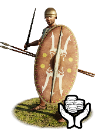
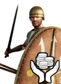
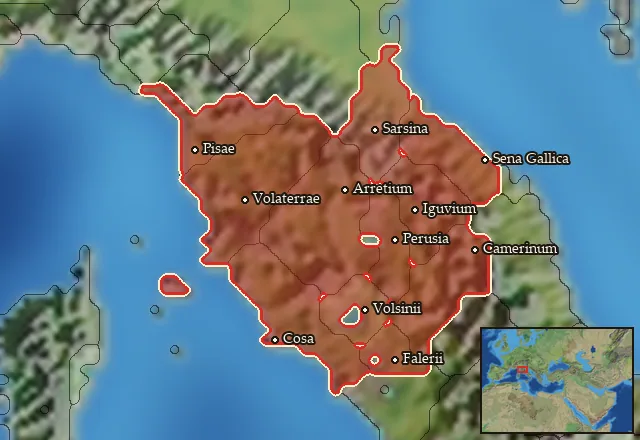

Mercenary Umbrian Swordsmen


Mercenary. Hired from a regional pool, not recruited from a building.
Class: light · Category: infantry · Men per unit: 40
Description
“When the armies first met they were so evenly matched that had the Etruscans and Umbrians been present, whether taking part in the battle or attacking the camp, the Romans must have been defeated.” – Livy describing the Battle of Sentium, 295 BC (Ab Urbe Condita, 10.27.11)
These Umbrian Swordsmen are medium infantry drawn from the cantons of the central Apennines. Armed with a straight, double-edged short sword (xiphos), these warriors are trained to throw javelins and then follow up with furious charges into the disorganized enemy ranks. Each man carries a large oval thureos shield, featuring an iron or bronze boss that can be used offensively to stagger opponents in hand-to-hand combat, and that is decorated with vivid sunburst, eye, or geometric blazons. For protection, they use bronze Montefortino or Italic helmets fitted with feathers and bronze belts. These men wear no torso armour, giving them the agility needed to exploit openings in enemy formations and fight effectively in their mountainous homelands.
Historical background
The cultural identity and martial traditions of Umbria were similar to those of the other Italic peoples of the Apennines. However, what set them apart was their society being “stimulated and facilitated by the creation of a ruling class and an aristocracy that were implicitly opposed to that of the Etruscan world” (Manconi, 'The Umbri', in: Farney and Bradley (eds.), The Peoples of Ancient Italy (2017), pp. 605–607). In historical narratives, Roman authors occasionally categorized the Umbrians alongside the Campanians under stereotypes of luxury or unreliability, yet classical sources consistently acknowledged their ancient origins and military potential (Plin. HN 3.112; Scopacasa, 'Ethnicity', in: Farney and Bradley (eds.) (2017), pp. 105, 115; Bradley, Ancient Umbria (2000), pp. 20–22). In the epic poem Punica, Silius Italicus catalogues the Italian allies serving at the Battle of Cannae (216 BC) and specifically celebrates the combativeness of troops hailing from Umbrian cities such as Ameria, Camerinum, and Tuder: ‘‘And the rural Umbrians strengthened the forces no less, arriving from their hills and valleys. [...] They sent tough men: Amerians, and Camertes celebrated for sword and plough, the men of Sarsina rich in flocks, and warriors from Todi, no laggards in time of war” (Sil. Pun. 8.461–462).
According to Burns, the increasing usage of the sword is a development in Italic warfare which may have arrived relatively late, perhaps even after the start of Roman military hegemony in the 3rd century. While Livy describes the sword as being the decisive weapon in the 4th century, this does not seem to correspond to representational and archaeological evidence (Burns, The Cultural and Military Significance (2005), pp. 191–194). Nevertheless, swords found in 5th- and 4th-century BC warrior tombs across Central Italy include straight double-edged blades as well as curved slashing swords, and ancient commentators praised their devastating impact when striking unprotected limbs or slashing around the rim of a shield (Xen. Eq. 12.11; Burns (2005), pp. 53, 191–194). Livy, for instance, describes a moment during the Second Macedonian War (200–197 BC) where King Philip V of Macedon's troops are struck with horror upon seeing the devastating wounds inflicted by the Roman sword (gladius hispaniensis): “Philip's men had been accustomed to fighting with Greeks and Illyrians and had only seen wounds inflicted by javelins and arrows and in rare instances by lances. But when they saw bodies dismembered with the Spanish sword, arms cut off from the shoulder, heads struck off from the trunk, bowels exposed and other horrible wounds, they recognised the style of weapon and the kind of man against whom they had to fight, and a shudder of horror ran through the ranks. Even the king himself felt apprehensive” (Liv. 31.34).
The bellicose nature of the Umbrians was displayed during their confrontations with Rome in the late 4th century BC (Bradley and Hall, 'The Roman Conquest of Italy', in: Farney and Bradley (eds.) (2017), pp. 202–203). When hostilities erupted in 311–308 BC, Roman commanders under Q. Fabius Maximus Rullianus campaigned along the Via Amerina, defeating Umbrian forces before concluding alliances with Camerinum and Ocriculum (Liv. 9.36.6, 9.41.20; Manconi (2017), p. 629). An Umbrian army also attempted to join a massive anti-Roman coalition at Sentinum in 295 BC, the largest battle fought in Italy prior to the Punic Wars, in which over 36,000 Romans and allies engaged an army of Samnites, Gauls, and Etruscans. However, they were unable to help their allies due to the Romans ravaging their lands as a diversion, which prompted the Umbrian and Etruscan contingents to move away to protect their own lands, thus preventing them from arriving on the field of battle in force (Liv. 10.27.11; Diod. Sic. 21.6.1–2; Bradley and Hall (2017), p. 202).
As Rome expanded into the region, the Umbrians were eventually Integrated as allied cohorts (socii), serving extensively in Roman armies through the 2nd century BC (Manconi (2017), pp. 629–630). During the Social War (91–89 BC), when the Italic armies threatened Rome's eastern borders, sections of the Umbrians and Etruscans began preparations to join the revolt after hearing of early rebel victories (App. B Civ. 1.49; Santangelo, 'The Social War', in: Farney and Bradley (eds.) (2017), pp. 241–243). Recognizing the severe danger of a third front in Central Italy, the Roman Senate acted quickly to prevent the uprising by passing the Lex Iulia (90 BC) and Lex Plautia Papiria (89 BC), granting full Roman citizenship to all citizens of Latin and Italic towns (socii) that had remained loyal and had not taken up arms against Rome, thus formally incorporating the Umbrian oppida as Roman municipia. According to Manconi, it is in the first century BC that the process of unification of Umbria under Roman citizenship can be said to have been definitively concluded with the setting up of administratively independent municipal systems (App. B Civ. 1.49; Cic. Arch. 7; Santangelo (2017), pp. 241–243; Manconi (2017), p. 630).
Stats
| Rank in roster | ||
|---|---|---|
| Men per unit | 40 | ███······· 30% |
| Attack | 12 | █████····· 47% |
| Charge bonus | 10 | ███······· 31% |
| Defence | 28 | ████······ 37% |
| · armour | 2 | █········· 13% |
| · defence skill | 22 | ██████···· 61% |
| · shield | 4 | █████····· 48% |
| Morale | 11 | ████······ 39% |
| Discipline | Impetuous (may charge without orders) | |
| Training | Highly trained | |
| Upkeep per turn | 540 dn | ███······· 25% |
Weapons
| Primary | Secondary | Primary | Secondary | Primary | Secondary | Primary | Secondary | ||||
|---|---|---|---|---|---|---|---|---|---|---|---|
| Attack | 12 | 10 | Type | thrown · blade | melee · blade | Projectile | javelin | — | Ammunition | 4 | — |
| Charge bonus | 10 | 10 | Damage | piercing | piercing | Range | 50 | — | Properties | Used just before charging into combat · thrown | — |
Defence
| Primary | Secondary | Primary | Secondary | Primary | Secondary | Primary | Secondary | ||||
|---|---|---|---|---|---|---|---|---|---|---|---|
| Total | 28 | — | Armour | 2 | — | Defence skill | 22 | — | Shield | 4 | — |
Condition and terrain
| Hit points | 1 | Ground: scrub / sand / forest / snow | 0 / 0 / 0 / 0 | Charge distance | 30 | Formations | Square |
Technical stats
| Time between blows (primary / secondary) | 2.5 s / 2.5 s | Collision mass per man (1.0 is normal) | 0.91 | Spacing between men: close / loose | 1 × 1.2 m / 2 × 2.4 m | Default ranks | 5 |
| Extra fatigue in hot climates | 0 |
In battle: Can sap · Good stamina
Where to hire it
Mercenaries are hired from a regional pool, not recruited from a building. This unit is offered by 1 pool covering 11 regions, at 3,098 dn to hire and 0 experience.
Mercenary pool: Etruria Umbria

At least one of those pools sells to any faction that has an army in range, with no faction restriction.
The 11 regions where this unit appears in a mercenary pool
Ager Gallicus · Camertia-Nahartia · Etruria · Etruria Meridionalis · Etruria Occidentalis · Etruria Orientalis · Etruria Septentrionalis · Faliscia · Sassinia · Umbria · Velzna